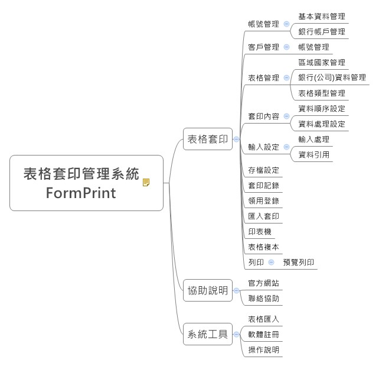

使用者自行設計
我們將以郵局的劃撥單的套印設計，作為說明範例，當您在學習的過程中，如果某個流程需要更詳細的說明，您可參考綜合性設定說明或視窗功能說明，當然如果我們的說明仍無法解決您的問題時 ，請您與我們聯絡，讓我們有改善的機會。為便利說明，請您再看一次軟體架構圖

表格套印管>理系統架構圖
- 新增表格資料
- 先將準備要進行套印設計的表格，以最清楚的方式掃描成電子檔，並剪裁妥善後備用。
- 進入「表格套印 -> 表格管理」，點選新增，逐一輸入相關資料後點選存檔。
- 設定套印內容：由使用者決定要在表格套印的字串及圖檔
- 資料配置設定：
- 設定套印項目資料取得方式,直接取用、資料分配及引用方式並排定期先後順序。
- 提供後續「資料處理設定」「資料輸入設定」、資料存檔設定的參考依據。
- 資料處理設定：例如臺灣日期改為西元日期或將日期分為年、月、日，以及將數字1,000 轉換成壹仟元整，都是由這裏進行設定。
- 輸入設定
- 增加輸入項目：不需要套印出來的輸入項目，主要用於。
- 資料查詢：例如輸入帳戶編號，查詢並帶入帳戶相關資料
- 資料處理：例如表格編號資料不需要套印，但需要存入資料庫。
- 輸入處理設定：例如日期轉換、引用前次日期或限定僅能輸入數字…等功能。
- 資料引用設定：可以設定經由那個欄位查出相關資料，例如輸入帳戶代號查出該帳戶戶 名等相關資料。
- 存檔設定：可將套印後的資料存檔，存檔設定其項目及順序等資料格式，也可供匯入套印 的檔案參考。